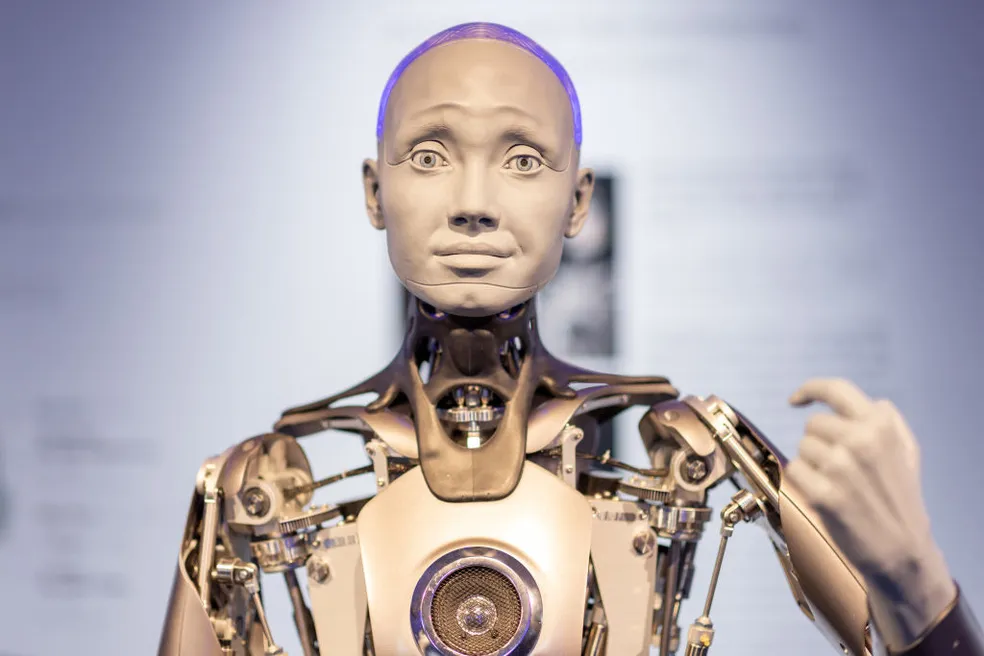

Matéria sobre Robôs e Tecnologia Avançada
Robótica Moderna
A robótica avançada está transformando várias indústrias, desde a manufatura até a medicina. Robôs autônomos estão sendo desenvolvidos para realizar tarefas complexas, aumentando a eficiência e a precisão.
Inteligência Artificial
A inteligência artificial está impulsionando o desenvolvimento de robôs capazes de aprender e se adaptar ao ambiente. Algoritmos avançados permitem que os robôs tomem decisões autônomas com base em dados e experiências anteriores.

Robótica Médica
Na área da saúde, robôs cirúrgicos estão sendo usados para realizar procedimentos complexos com precisão e menos invasividade. Essa tecnologia promete melhorar os resultados dos pacientes e reduzir o tempo de recuperação.

Tecnologias Emergentes
Além da robótica, outras tecnologias avançadas, como realidade aumentada, realidade virtual e computação quântica, estão moldando o futuro. Essas inovações têm o potencial de revolucionar diversas áreas da sociedade.